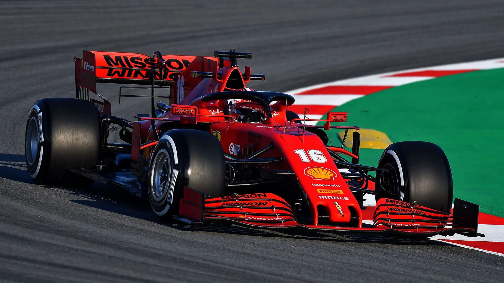

Charles Leclerc
Carlos Sainz
A csapatot 1929-ben alapította Enzo Ferrari amatőr versenyzők támogatásának érdekében, bár ő maga is versenyzett azelőtt a Fiat csapatnál. Az ötlet november 16-án egy vacsora alkalmával jött, amikor Bolognában Augusto és Alfredo Caniato textilgyárasoktól, illetve a gazdag amatőr versenyzőtől, Mario Tadinitól kért pénzügyi segítséget. Egy negyven főből álló csapatot gyűjtött, melynek legtöbb pilótája Alfa Romeo 8C autóival versenyzett; Enzo Ferrari maga is folytatta versenyzői karrierjét első fiának, Dinónak 1932-es születéséig. Alfa Romeo Tipo C, amelyet a Ferrari 1935-től 1936-ig használt 1933-tól gazdasági nehézségek miatt az Alfa Romeo csak ritkán indult versenyeken, helyét a Scuderia Ferrari autói vették át. 1935-ben Enzo Ferrari és Luigi Bazzi megépítették az Alfa Romeo Bimotore-t, Ferrari emblémával az oldalán. Ebben az évben az Alfa Romeo ismét versenyezni kezdett. 1938-ig Enzo Ferrari számos, már befutott versenyzőt (többek között Tazio Nuvolarit, Giuseppe Camparit, Achille Varzit és Louis Chiront), valamint több tehetséges kezdőt (Tandini, Guy Moll, Carlo Maria Pintacuda és Antonio Brivio) menedzselt a modenai Trento e Trieste körúton található központjából. Ebben az évben az Alfa Romeo kinevezte a gyár versenyrészlege, az Alfa Corse vezetőjévé. 1939-ben azonban távozott, mert úgy érezte, hogy szerződtetésével az Alfa őt ki akarja vásárolni, csapatát, a Scuderiát pedig magába szeretné olvasztani. Cégének nevét Auto Avio Costruzioni Ferrarira módosította, és szerszámgépgyártással kezdett foglalkozni. Az Alfával kötött megállapodásában vállalta, hogy nem épít versenyautót Ferrari nevén az elkövetkező négy évben. Az Alfa Romeóval kötött megállapodás ellenére a Ferrari azonnal elkezdett dolgozni az első saját versenyautóján, mely a Tipo 815 nevet viselte. Az Alberto Massmino tervezte autó volt az első igazi Ferrari versenyautó. Bár autó részt vett néhány fontosabb megmérettetésen, a második világháború ideiglenesen véget vetett a versenyzésnek, a Tipo 815 soha nem lépett többé versenypályára. Ferrari továbbra is szerszámgépeket gyártott. 1943-ban átköltöztette főhadiszállását Maranellóba, egy évre rá a várost bombázni kezdték.
Minket kövessenek ne az álmaikat!